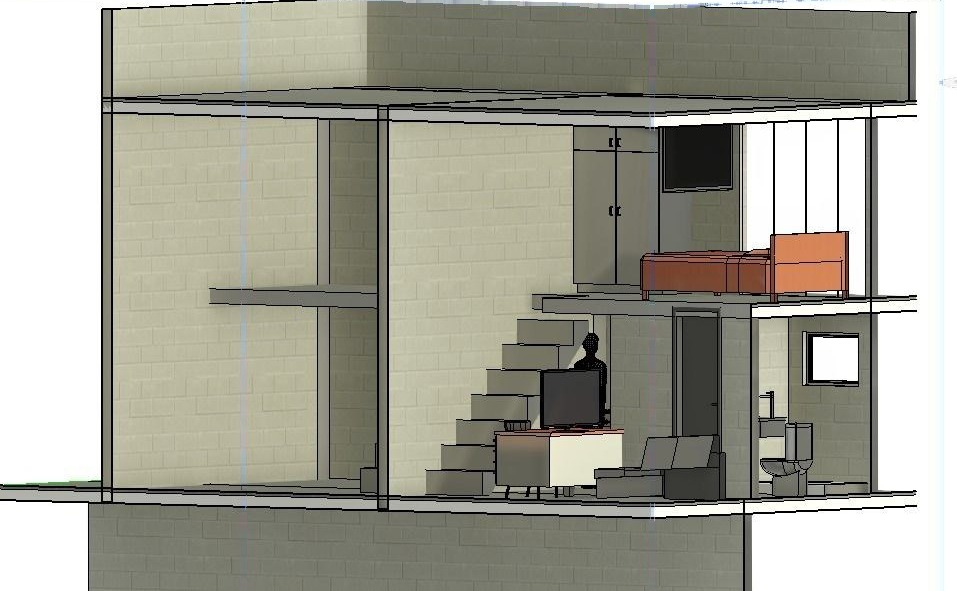

Um aluguel que termina com a casa no seu nome
Nas grandes cidades do Brasil, o aluguel de contrato novo subiu quase o dobro da inflação no último ano, e nem um centavo dele vira seu. O banco pede 20 a 30% de entrada, antes de você pegar as chaves. Queremos mudar isso, com um piloto pequeno no Rio, organizado como cooperativa de bairro.
Aluguel tinha que comprar alguma coisa. No nosso modelo, parte de cada pagamento vai para a compra da casa em que você mora, e o que sobra depois dos custos e das reservas constrói a próxima. A cooperativa ainda não existe. Estamos procurando as pessoas que vão fundá‑la com a gente.
Entrar no grupo da IMOBX no TelegramOs fundadores respondem lá em português ou inglês. Todos no grupo veem o que você publica, então deixe dados pessoais para uma mensagem privada.
Nada está à venda nem para alugar, e não há preço nem condições. Para famílias: como funciona

- Casas em volta de um gramado, para os pais verem os filhos brincarem
- Um pomar
- Uma horta
- Parquinhos
- Duas salas de estudo
- Painéis solares nos telhados
De uma casa a um bairro resiliente
Não queremos construir casas e ir embora. Queremos criar não só casas, mas bairros de transição social rumo a um futuro resiliente. Fazer um lar é uma busca existencial de toda pessoa, esteja onde estiver.
Uma casa
No nosso plano, a construtora dos fundadores constrói as primeiras casas, e alguém independente de nós confere cada custo.
Um lar
Uma família se muda e paga para ser dona da casa. Cumpriu as condições escritas, a escritura fica no nome dela.
Um bairro
Casas próprias em volta de espaços comuns. Moradia compartilhada: uma forma de viver e cooperar que os próprios moradores administram.
Resiliência
Mais tarde, alimentação, energia e serviços locais, organizados pelos moradores. O piloto começa só com moradia.
Primeiro provamos que funciona. A prova gera confiança, e a confiança atrai financiamento e escala. Etapas do projeto
Para onde vai o dinheiro de cada mês
Alugar
O dinheiro vai embora.
O aluguel de contrato novo subiu 9,13% nos 12 meses até setembro de 2026, contra 4,58% de inflação (FipeZap, em Por que moradia).
Financiar no banco
20 a 30%entradaPrimeiro, uma entrada grande.
Exemplo da Caixa (9 de dezembro de 2025): 20 a 30% do preço de entrada, e depois até 35 anos com juros.
A proposta: aluguel com compra na IMOBX
custos e reservaspróxima casaParte fica na casa.
Propomos que não haja entrada. Preço e condições ficam por escrito antes de alguém se mudar, e os custos e as reservas são pagos primeiro.
Nosso protótipo: os dois lofts



De quem precisamos, e como entrar
Precisamos de pessoas que compartilhem esta visão, entendam o problema e tenham meios ou dedicação. Traga o que você tem e ajude a fundar a cooperativa com a gente.
Um imóvel
Terreno ou prédio para doar, vender ou alugar.
Primeiro, uma conversa sobre o imóvel e as verificações que ele precisa.
Obra
Construir a preços combinados, com trabalho e faturas conferidos por alguém independente da construtora e de nós.
Primeiro conversamos sobre o escopo e o preço.
Trabalho profissional
Direito, contabilidade ou trabalho comunitário.
Juntos, escolhemos uma primeira tarefa e marcamos um prazo.
Financiamento
Doações e editais, por enquanto. Investimento só quando a forma jurídica da cooperativa permitir, e só com termos por escrito.
Conversamos sobre a finalidade do dinheiro e quem pode recebê-lo legalmente.
Entre no grupo da IMOBX no Telegram e um fundador responde. Até a cooperativa ser constituída e suas regras combinadas, não oferecemos filiação, cotas nem investimento.